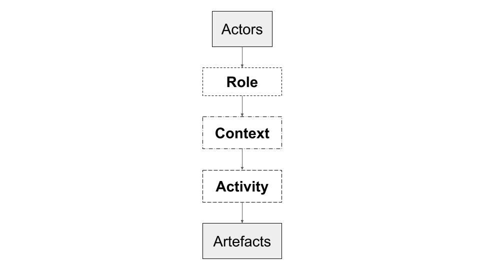

Discussing Performance Ecologies
Workshop Description
In this workshop, we aim at fostering a conversation on performance ecologies. At first, part of the workshop will be a self-reflective activity. The participants will analyse one of their recent performances, or pieces of music technology they developed. This activity will be facilitated by the use of ARCAA—a framework to study performance ecologies. Then, a collective discussion will characterise the second part of the workshop.
Website: https://www.adampultz.com/discussingperformanceecologies/
Organizers
Raul Masu, raul@rualmasu.org FCT/NOVA University of Libon, and ITI/LARSyS.
Adam Pultz Melbye, Sonic Arts Research Centre Belfast, Northern Ireland.
Timezones: we would be happy to run the workshop twice; for us it would be ideal to do in late morning and evening CEST. We are based in two different Time Zones: Lisbon (UCT + 1) and Berlin (UCT + 2 / CEST)
Description (up to 750 words)
In the last two decades, the idea of a performance ecology indicates a complex set of elements that compose a performance, including makers, performers, composers, instruments, and the environment. While discussing the ecology of music creation, Gurevich and Trevino proposed to focus on the "relationships between composers, performers, and listeners as a part of a system", also considering history, genre, and context [1]. Similarly, Waters argues that performance ecosystems encompass the interactions among performers, instruments, and environments [2].
In this workshop, we aim at promoting a discussion on performance ecosystems with our participants, with the intent to reflect on commonalities, differences, issues and advantages when a given piece of interactive music tech is designed, by considering the entire performance ecology.
To this end we will organize two activities, an initial self-reflection followed by a collective discussion. To facilitate the self-reflective process we will ask the participants to use ARCAA to represent the ecology of a recent performance in which they took part (as performers, composers, designers, builders, technicians or any other possible role).
ARCAA [3] is a recently proposed framework to analyze performance ecologies. It is based on the structure of MINUET [4], a previous framework presented at NIME in 2014. The idea of ARCAA is to help understand the relations between the various human actors and artefacts by visualizing them. The framework (Figure 1) suggests to connect all the actors (top in the image) to all the artefacts (bottom in the image) using three levels: Role, Context, and Activities. Each level proposes a different question:
1) "Who is involved, and in which role?".
2) "In which context is each actor involved?".
3) "What kind of activities are the actors performing?" [3].
ARCAA has already been used in a number of studies ([5] [6] [7]).


The ARCAA framework
The self-reflective process will be done individually. We will prepare an online document where the various participants can upload their ARCAA representation of the ecology. In this way, it will be possible for all the participants to observe the various ecologies.
After this, we plan to set up a collective discussion about the produced schemes. First, each participant will briefly present their ecology. Then, we will collectively discuss all levels (Role, Context, Activities), looking for similarities and differences. In the end, we will discuss advantages and issues of considering the overall ecologies in reflections on interactive music technology.
Timeline overview
Introduction and ARCAA presentation: 10 minutes
Individual self-reflective activity: 20 minutes
Individual presentation: 20 minutes
Discussion similarities and differences: 30 minutes
Role: 10 minutes
Context: 10 minutes
Activity 10 minutes
Discussing advantages and disadvantages: 10 minutes
Final remarks and conclusion: 5 minutes
We encourage all participants to familiarise themselves with the ARCAA framework ahead of the workshop, for istance:
Workshop organizers bio
Raul Masu is an HCI researcher who explores the potential of sound, and a musician who plays with interactive computers. His research focuses on ecologies of interactions among musicians, designers, technologies, and other actors. In recent years, he is particularly interested in ethical and environmental aspects of music technology research, and has a strong inclination toward Free Software. He is currently a PhD student in Digital Media at the Department of Informatics, NOVA University of Lisbon, and affiliated with ITI/LARSyS. Raul has graduated in Electronic Music (BA) and Composition (10-Years Diploma – Master level equivalent) from the Bonporti Music Conservatory (Trento). After his graduation, he worked as a research assistant in the Interaction Lab (University of Trento). Raul's scientific articles are published in international venues in the fields of Music Technology (e.g. NIME, Audio Mostly) and HCI (e.g. CHI, DIS, TEI, Personal and Ubiquitous Computing Journal). His musical works have been presented the Moving Digits Creative Europe project (Tallin, Düsseldorf, Madeira), Witte de With center for contemporary art (Rotterdam), Centro Italiano di Cultura (Tokyo), Queen Mary University (London). Since 2020 Raul is one of the NIME environmental and ethical officers.
Adam Pultz Melbye is a composer, performer and researcher. He has composed and performed music for dance, theatre, image, sound installations, and has exhibited 3D-printed sculpture, in addition to performing solo concerts and touring with groups across, Europe, Australia, Japan and the US. He appears on around 50 albums. Adam is currently undertaking PhD research at Sonic Arts Research Centre in Belfast, exploring the design of, and performance with, the FAAB (feedback-actuated augmented bass). His writing has been published in Organised Sound and the Proceedings of the NIME conference, and he is the recent guest editor of a special issue on feedback for the ECHO Journal at Orpheus Institute in Ghent, Belgium. Since 2020 Adam is one of the NIME environmental officers.
Citations
Gurevich, Michael, & Trevi no, Jeffrey. (2007). Expression and Its Discontents : Toward an Ecology of Musical Creation. In Proceedings of the International Conference on New Interfaces for Musical Expression (pp. 106–111). New York City, NY, United States: Zenodo. http://doi.org/10.5281/zenodo.1177107
↩Waters, Simon. "Performance Ecosystems: Ecological approaches to musical interaction." EMS: Electroacoustic Music Studies Network (2007): 1-20.
↩- ↩Masu, R., Bettega, M., Correia, N. N., Romão, T., & Morreale, F. (2019). ARCAA: A Framework to Analyse the Artefact Ecology in Computer Music Performance. Proceedings of the 9th International Conference on Digital and Interactive Arts. https://doi.org/10.1145/3359852.3359870
Morreale, Fabio, Angeli, Antonella De, & O'Modhrain, Sile. (2014). Musical Interface Design: An Experience-oriented Framework. In Proceedings of the International Conference on New Interfaces for Musical Expression (pp. 467–472). London, United Kingdom: Zenodo. http://doi.org/10.5281/zenodo.1178879
↩- ↩Masu, R., Bettega, M., Correia, N. N., Romão, T., & Morreale, F. (2019). ARCAA: A Framework to Analyse the Artefact Ecology in Computer Music Performance. Proceedings of the 9th International Conference on Digital and Interactive Arts. https://doi.org/10.1145/3359852.3359870
- ↩Masu, R., Correia, N. N., Jurgens, S., Feitsch, J., & Romão, T. (2020). Designing Interactive Sonic Artefacts for Dance Performance: An Ecological Approach. Proceedings of the 15th International Conference on Audio Mostly, 122–129. https://doi.org/10.1145/3411109.3412297
Masu, Raul, Nuno Do Nascimento Correia, and Teresa Romao. "NIME scores: a systematic review of how scores have shaped performance ecologies in NIME." (2021).
↩Masu, Raul, Nuno N. Correia, and Teresa Romão. "Technology-mediated musical connections: the ecology of a screen-score performance." Audio Mostly 2021. 2021. 109-116.
↩